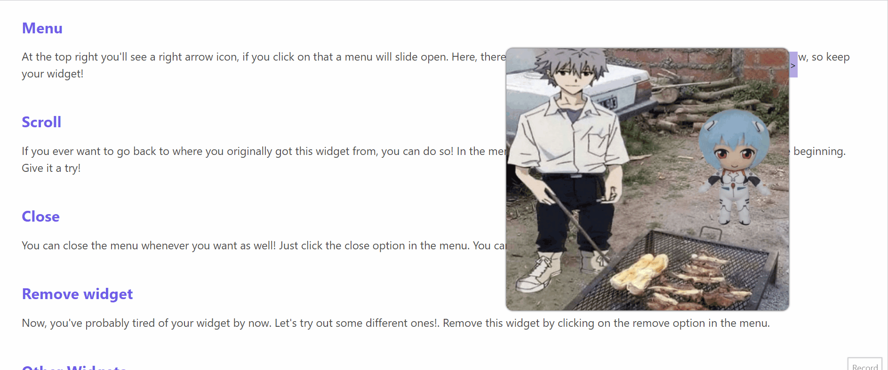
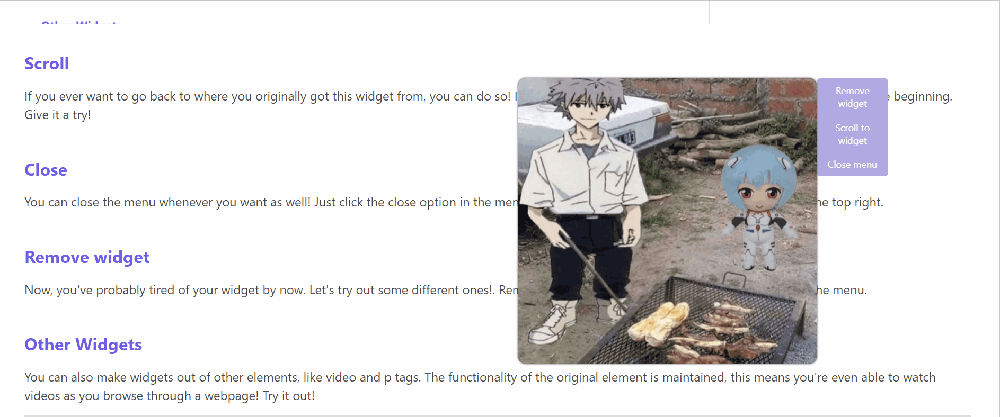
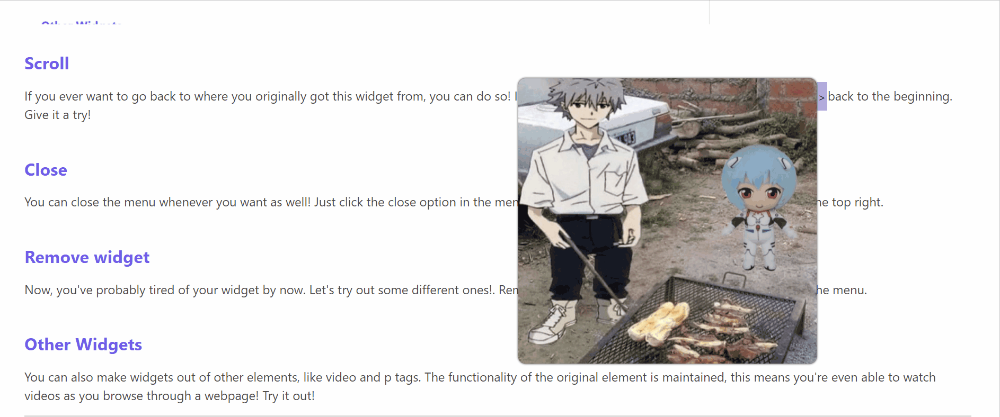

Overview
When scrolling through a webpage you often find yourself wanting to revisit a certain image, diagram or any type of media. But in order to do so, you must scroll through the page again in order to find it. I don't know about you, but I find this task to be really annoying, especially when this happens on a normal basis. Wouldn't it be nice to have that image right in front of you at all times so you can have easy access to it whenever you want. Well you can do this now with WidgIT.js
***** insert gif ****Basic usage

Pick one image you like down below. Once you have chosen, hold down
your mouse on this image for 0.5s and watch the widget pop out! You
can drag the widget while the mouse is held down. If you have
decided on a place to put the widget, just simply let go. Now watch
how when you scroll, the widget will stay in place! You can also
create as many as you want, try it!
Now, keep this widget with you! We are going to use it to help guide you through the basic usages
of the library! If you want to adjust the positioning of the widget,
you can hold down your mouse again and drag it wherever you desire.
Resizing
If you hover on the 4 corners of the widget, you will see arrow signs. Hold down on your mouse button and then drag it. You'll notice that the widget's size changes as well. You can perform the same maneuver on all 4 corners to get the size that you want!

Menu
At the top right you'll see a right arrow icon, if you click on that a menu will slide open. Here, there are 3 more functionalities, we will go over them down below, so keep your widget!
Scroll
If you ever want to go back to where you originally got this widget from, you can do so! In the menu, click on the scroll option, and it'll send you back to the beginning. Give it a try!

Close
You can close the menu whenever you want as well! Just click the close option in the menu. You can always reopen it by clicking the button in the top right.
Remove widget
Now, you've probably tired of your widget by now. Let's try out some different ones!. Remove this widget by clicking on the remove option in the menu.
Other Widgets

You can also make widgets out of other elements, like video and p tags. The functionality of the original element is maintained, this means you're even able to watch videos as you browse through a webpage! Try it out!
Sint eiusmod duis deserunt laboris fugiat. Quis cillum aliquip enim non tempor labore. Commodo mollit adipisicing est cillum cupidatat nulla. Officia excepteur cillum qui sint. Ex nisi anim sit eu nisi aliqua ipsum magna pariatur culpa. Consectetur culpa qui nulla aliqua labore sit quis nisi. Magna consectetur qui enim aliqua eu Lorem. Laboris pariatur do sint est labore ipsum adipisicing exercitation laborum in. Velit minim eu voluptate dolore cupidatat aliquip ullamco deserunt mollit ad velit nulla id anim.
Change identifier

You can change how the end user can perceive which elements they can make widgets out of! So far in the examples we have shown
they simply change opacity and background color on hover. You can customize the css for this in whatever you like, just simply using the setIdentifier(className) method associated with the widget (please use this method to set the css, otherwise it won't work properly). See the code examples below for more details. Here, the first image uses the same identifier css, but the second one now transforms in scale on hover.
const star = document.querySelector(".examples-widgit-star")
const green = document.querySelector(".examples-widgit-green")
// setIdentifier takes in the name of a css class, and applies that to the element itself!
let starWidget = createWidget(star);
starWidget.setIdentifier("widgit-widget")
let greenWidget = createWidget(green);
greenWidget.setIdentifier("widgit-widget2")Set hold down time
You can also change how long a user must hold their mouse button down in order for the widget to be created. The default time is 0.5s, but if you want to specify a different time, you can do so! Simply use setHoldDownTime(time) where time is in ms.
// this will set the hold down time to 2s
setHoldDownTime(2000)
Set menu close/open animation speed
You can also chanage how long it takes for the for the menu to slide out. The default time is 1s, but if you want to specify a different time, you can do so! Simply use setMenuOpenAnimationSpeed(time) or setMenuCloseAnimationSpeed(time), where time is in ms.
// this will set the menu animations to last 0.5s
setMenuOpenAnimationSpeed(500)
setMenuCloseAnimationSpeed(500)